ќкт€брь 2008
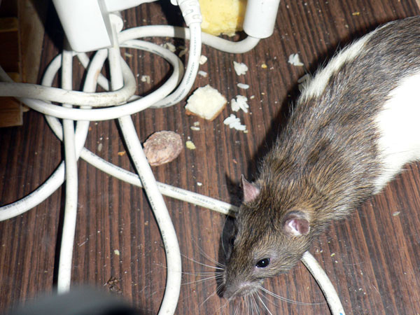
—клад наверху шкафа, который устроил себе дон
–умата. ќстальные туда не лаз€т.
ѕрим: это Ч далеко не самый полный запас еды, который там был.
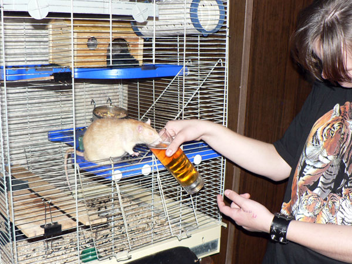
Ёрик: Ч Ќичего, сойдет. ј темного пива нет?
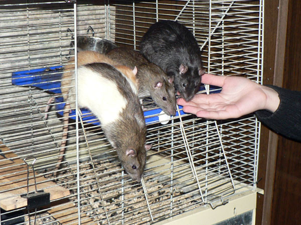
Ч Ќас всех погладьте, оптом, пожалуйста!
—лева направо: дон –умата, Ёрик замаскировалс€, дон –эба и Ќагваль Ќикодим.
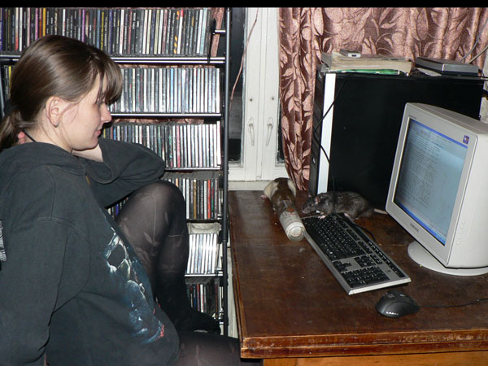
—атир: Ч ƒон –умата, а мне кефир останетс€?
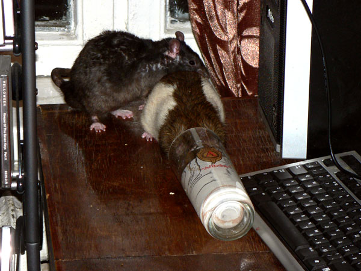
—атир ¬ерещагин: Ч «анимаю очередь...
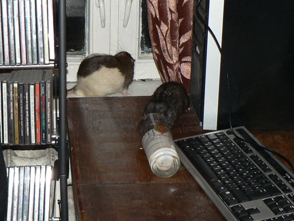
ƒон –умата: Ч я все.
—атир: Ч ѕон€л, приступаю.
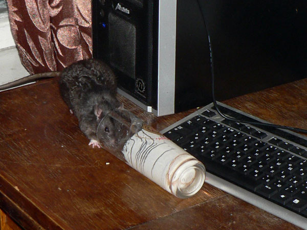
—атир: Ч „то вы это на мен€ смотрите?
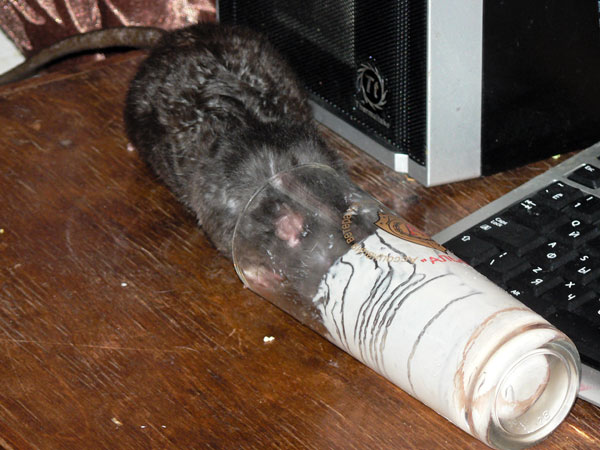
Ч ўа все оближу...
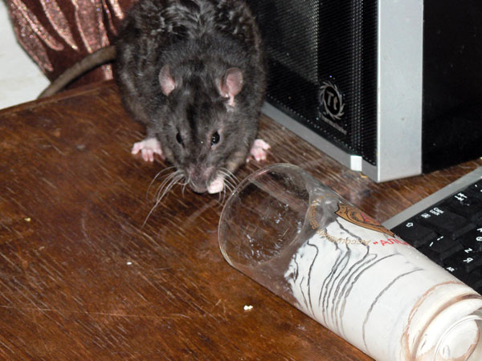
Ч √м... ¬се не смог. Ќе лезет.
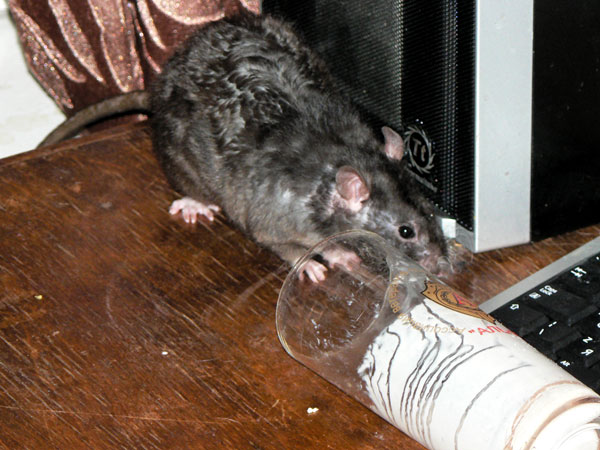
—атир: Ч Ћадно, пойду погул€ть. »ли поспать...
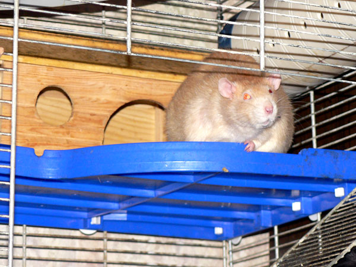
Ёрик: Ч ¬ысоко сижу, далеко гл€жу...
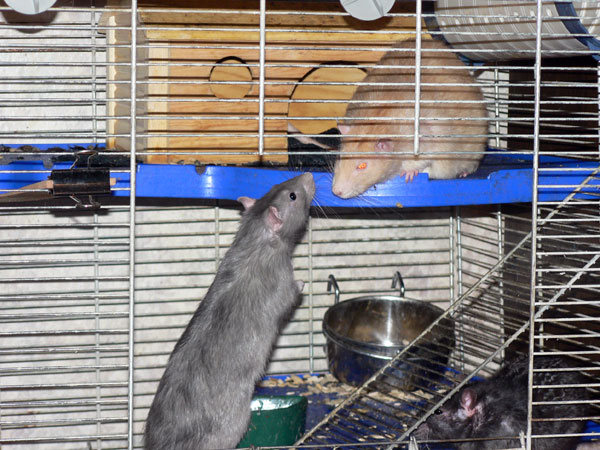
’аритон: Ч Ёрик, а что ты тут сидишь и гл€дишь?